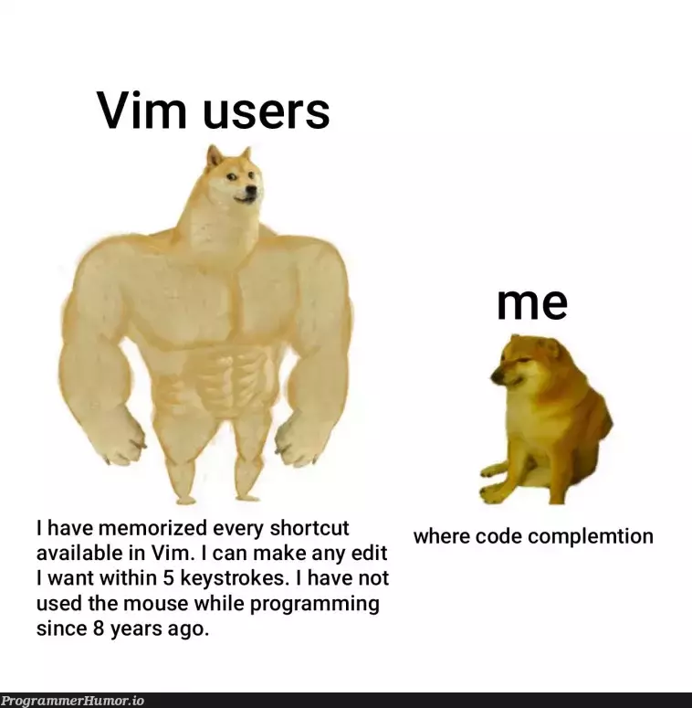
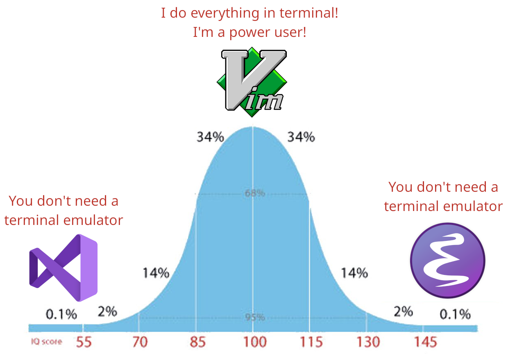
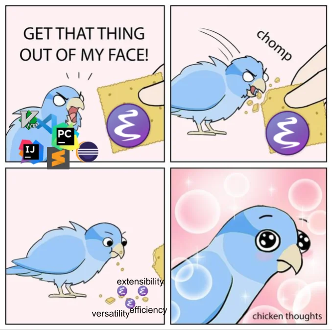

My career launched at a company where everybody used IntelliJ IDEA. There were developers who had already been working for a decade and had seen Java IDEs like Eclipse come and go. Using IntelliJ was the default option because there were no other viable tools for Scala/Java development.
When I started working at this company, I was a completely junior developer. I didn't have a degree in a related field or much practical experience. Naturally, I didn't question why my team used IntelliJ IDEA or why I should use it - it worked, and it was good enough.
IntelliJ IDEA does not have complicated UIBut as I explored more of the IT and open-source world, I discovered Vim. Its approach to navigating text blew my mind. Once I became more comfortable with Vim motions, I installed plugins for every application I used, like DBeaver, IntelliJ, Chrome, etc.
At that point, I thought, "OK, I have a very efficient IDE, and I have a very efficient navigation. There's nothing left to surprise me." Then I encountered Emacs. It wasn't love at first sight. While I could see that Emacs was a cool and powerful tool, I didn't initially understand how to use it effectively for modern development.
Time passed, and I changed jobs. At my new workplace, I was tasked with editing a huge configuration file. I started doing it manually but quickly realized I was essentially executing an algorithm by hand. Using Java or Scala to automate the process wasn't practical because I would need to deserialize the configuration into Java objects, manipulate them, and then serialize them back into a file, losing the sorting and developer comments in the process.
At that moment, I remembered Emacs. I realized I could write a function to automate the changes programmatically. I installed Emacs on my laptop, wrote the function, and completed the task quickly, with minimal git changes that were easy for others to review.
This experience showed me the power of a programmable editor. From that point on, I started using Emacs. At first, it was just an additional text editor for files that IntelliJ didn't support. But after discovering Doom Emacs, everything changed. I started using Doom Emacs as my main editor for working on all projects.
During this time, I discovered Magit, Dired, Restclient, Org-mode, and other fantastic Emacs tools. After that, there was no turning back.
The most incredible thing I found in the Emacs ecosystem is that every application strives to be as simple as possible. Each time I discovered a new app that solved a problem, I was amazed at how elegant the solution was.
But the story doesn't end there. I was still using Evil-mode (Vim motions in Emacs).
Evil-mode is an excellent extension, but I sometimes noticed that some applications didn't work well with it. You still needed to know vanilla Emacs keybindings, and things didn't always work as smoothly as they could.
Eventually, I decided to learn vanilla Emacs. To be honest, I had tried using vanilla Emacs before, but those attempts failed because I was trying to recreate my own version of Doom Emacs (I believed that I need those all features which Doom Emacs offers). This time, I focused on keeping everything as simple as possible, adding new features only when absolutely necessary. I either wrote custom solutions or installed packages only when Emacs built-in features couldn't handle the task.
A lot has changed since then, and I love it. No more modal editing. Every change I make is visible immediately in the continuous event loop, without the need to predict or remember Vim commands. I can use the minibuffer like any other buffer without breaking my typing flow, and the experience is incredible.
(To solve the 'pinkie finger problem', I remapped LEFT ALT as LEFT CTRL. Now, my right thumb presses ALT, and my left thumb presses CTRL)
Date: Sat Jan 25 03:28:42 PM CET 2025